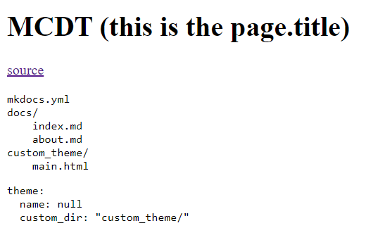

1. How to create a custom theme
MkDocs uses Jinja2 as its default templating engine.
dir tree
mkdocs.yml
docs/
index.md
about.md
custom_theme/
main.html
mkdocs.yml
theme:
name: null
custom_dir: "custom_theme/"
main.html
<!DOCTYPE html>
<html>
<head>
<title>
{% if page.title %}{{ page.title }} - {% endif %}{{ config.site_name }}
</title>
</head>
<body>
{{ page.content }}
</body>
</html>
This is an image of the result by now

This is not working
<img title="how cute <3" src="./resources/images/init.png" />